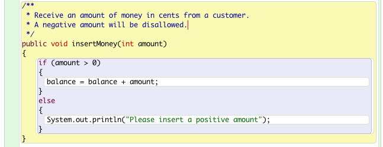

Virtual ticket machine
In this lab we shall build a very basic virtual ticket machine and in doing so gain further experience with some of the elements of classes such as fields, constructors and methods. We shall conduct a rudimentary analysis of the ticket machine class and implement some design improvements.
TicketMachine
Unarchive chapter02.zip BlueJ sample files, available here, into the directory workspaceBlueJ/bluej. Then copy chapter02 into your working tree workspaceBlueJ/labs.
Open the project naive-ticket-machine.
Activate the BlueJ Terminal Record method calls functionality as shown in Figures 1, 2 and 3.
Create an object ticketMachine1 using 500 as an actual parameter (argument) as illustrated in Figure 4.

The argument 500 represents the cost of the ticket that this naive ticket machine issues.
Inspect the TicketMachine methods: right clicking on the TicketMachine object opens a drop-down menu containing all the methods in the class.
These are:
int getBalance()
int getPrice()
void insertMoney(int amount)
void printTicket()Call getBalance. As expected you should have zero balance.
Call getPrice. The price of the ticket should be returned as 500, the figure entered as an argument.
Now print a ticket and inspect the BlueJ Terminal Window. This may be as illustrated in Figure 5.

The commands executed to instantiate TicketMachine and to print the ticket are shown on the ticket in Figure 2. If you wish not to see these commands click on the Terminal window and untick Record method calls in the BlueJ Options menu (Figure 6).

We have already revealed a serious design flaw in our ticket machine application which you no doubt have observed.
The flaw is that we have succeeded in printing a 500 cents ticket without inserting any money.
In fact we could print an indefinite number of such tickets.
Let's explore the behaviour of TicketMachine further.
Insert 100 cents and print a ticket.
Then verify that the balance is zero by invoking getBalance().
Now let's insert money in increments and verify the balance is correctly updated each time you make an addition.
Starting from zero balance insert in turn 100, 400, 100.
The final balance should be returned as 600 cents. So far so good.
Now with a balance of 600 print off a ticket. Remember the ticket costs 500 cent.
Check the balance. It returns zero. Clearly this is a no-refund machine.
Here is another design flaw: It is possible to insert negative amounts of money as an actual parameter into the constructor. For example:
TicketMachine ticketMachine = new TicketMachine(-500);Here is a summary of the tested behaviours of the ticket machine:
- TicketMachine object: can be constructed for negative-amount ticket.
- Money insertion: a negative amount can be inserted.
- Balance zero cents: possible to print any number of 500 cent tickets.
- Balance 100 cents: still possible to print tickets and balance falls to zero following printing.
- Balance 600 cents: following ticket printing the balance is zero meaning no refund.
We shall now set about correcting these design errors.
Explore TicketMachine source code
Still in naive-ticket-machine click on the BlueJ naive-ticket-machine window and using the menu commands Project | Save as save a copy of the project to your folder workspaceBlueJ/labs/session02.
Double click on the TicketMachine class graphic to reveal the underlying source code (Figure 1).
Here, below, is the complete class. It is good practice to comment code but we have removed the comments for the sake of compactness and to allow their introduction as each part of the class is explored and upgraded.
public class TicketMachine
{
private int price;
private int balance;
private int total;
public TicketMachine(int ticketCost)
{
price = ticketCost;
balance = 0;
total = 0;
}
public int getPrice()
{
return price;
}
public int getBalance()
{
return balance;
}
public void insertMoney(int amount)
{
balance = balance + amount;
}
public void printTicket()
{
System.out.println("##################");
System.out.println("# The BlueJ Line");
System.out.println("# Ticket");
System.out.println("# " + price + " cents.");
System.out.println("##################");
System.out.println();
total = total + balance;
balance = 0;
}
}TicketMachine Refactoring
Refactor TicketMachine constructor
We will impose a pre-condtion on the constructor to ensure that negative numbers are not processed as arguments.
This is the constructor code we wish to refactor:
public TicketMachine(int ticketCost)
{
price = ticketCost;
balance = 0;
total = 0;
}The statement price = ticketCost; :
- assigns the value represented by the actual parameter (argument) ticketCost to the instance variable price.
- the value that the instance variable price contains before the assignment statement is executed is replaced by the actual parameter ticketCost.
The statements balance = 0; and total = 0; initialize these instance variables to zero.
To ensure that only positive ticketCost values are processed we could refactor the constructor as shown in Figure 1.
The statement
if (ticketCost > 0)checks if the ticket cost exceeds zero and if it does, the statements within the following curly braces are executed, namely:
price = ticketCost;
balance = 0;
total = 0;Should an attempt be made to enter zero or a negative ticket cost, this block of code immediately above would be skipped over and the block following the word else would be executed (which would print a warning).
The words if and else are Java reserved words and consequently may only be used in an appropriate context.
- For example, it would be illegal to include the following statement in your code:
String if = "this is an illegal statement because if is a reserved word";This refactoring simply alerts the user to the attempt to construct an object illegally. However the application still proceeds to construct a TicketMachine object in which the object state remains uninitialized.
This is far from a perfect solution but will suffice for now. We will address this issue again later but with an industry-standard solution.
Carry out this refactoring, recompile the code, run and test.
The test should include:
- Create TicketMachine object.
- Insert a negative ticketCost.
- Verify that warning messages printed to console.
- Check that balance correct. It should still be zero.
- Insert a positive ticketCost.
- Verify input accepted.
- Check balance is correct. It should equal the ticketCost argument.
TicketMachine Refactoring
Refactor method: insertMoney .
Here is the existing code:
public void insertMoney(int amount)
{
balance = balance + amount;
}Again, we wish to prevent insertion of a negative amount of money.
Here again is a temporary solution (Figure 1).

Carry out this refactoring, recompile the code, run and test.
TicketMachine Refactoring
Refactor printTicket method
We must ensure ticket printed only when an adequate balance present.
Here is the existing code to print a ticket:
public void printTicket()
{
System.out.println("##################");
System.out.println("# The BlueJ Line");
System.out.println("# Ticket");
System.out.println("# " + price + " cents.");
System.out.println("##################");
System.out.println();
total = total + balance;
balance = 0;
}Three actions are performed in this method printTicket.
- Ticket printed
- The total instance variable updated:
- This variable maintains a cumulative total cost of all tickets issued to date.
- Note: the variable name could have been chosen to be more descriptive, for example int sumTicketsIssued;
- Balance updated
Here is the refactored code to update cumulative value of all tickets issued by this instance of the TicketMachine:
total = total + balance;This statement does not perform the required task.
It should read
total = total + price;When a ticket is printed the balance requires adjusting.
The statement
balance = 0;clearly does not perform the required action, namely, updating the balance each time a ticket is issued.
Here is the refactored code to update the balance:
balance = balance - price;We must also ensure that the balance is sufficient to pay for the ticket.
This refactoring can be achieved as follows:
public void printTicket()
{
if (balance >= price)
{
//print ticket
}
else
{
//warn user insufficient funds
}
}The refactored method is illustrated in Figure 1.
Carry out this refactoring, recompile the code, run and test.
TicketMachine Refactoring
New method refundBalance
Once a ticket is issued the balance is refunded to the client.
This requires a new method which we shall call refundBalance.
The signature of the getter method (including modifier and return type) is:
public int refundBalance()Here is what refundBalance does:
- Store the original (existing) balance in a temporary variable.
- Set the balance to zero;
- Return the original balance to the caller.
The complete class, including some documentation, is illustrated in the next step.
Refactored TicketMachine
public class TicketMachine
{
/**
* Create a machine that issues tickets of the given price.
* Note that the price must be greater than zero.
*/
public TicketMachine(int ticketCost)
{
if (ticketCost > 0)
{
price = ticketCost;
balance = 0;
total = 0;
}
else
{
System.out.println("Please insert a positive ticket cost");
}
}
/**
* Return the price of a ticket.
*/
public int getPrice()
{
return price;
}
/**
* Return the amount of money already inserted for the
* next ticket.
*/
public int getBalance()
{
return balance;
}
/**
* Receive an amount of money in cents from a customer.
* A negative amount will be disallowed.
*/
public void insertMoney(int amount)
{
if (amount > 0)
{
balance = balance + amount;
}
else
{
System.out.println("Please insert a positive amount");
}
}
/**
* If sufficient funds available print a ticket.
* Update the total value tickets to date
* Update the remaining balance.
*/
public void printTicket()
{
// If the balance greater than ticket price then we can print a ticket
if (balance > price)
{
// Simulate the printing of a ticket.
System.out.println("##################");
System.out.println("# The BlueJ Line");
System.out.println("# Ticket");
System.out.println("# " + price + " cents.");
System.out.println("##################");
System.out.println();
// Update the total value of tickets to date.
total = total + price;
// Update the balance.
balance = balance - price;
}
else
{
int deficit = price - balance;
System.out.println("Please insert at least "+ deficit +" more cents");
}
}
}Exercises
Exercise 1
- Write an accessor for the TicketMachine field int total.
- The signature including return type should be int getTotal().
- Compile and test the method:
- Create a TicketMachine object for a 250 cents ticket.
- Insert 1000 cents.
- Use getTotal to verify that the total attribute value is correct.
- Print 2 tickets
- Verify that the total is correct subsequently.
- Print 2 further tickets
- Check total
- Check balance
Exercise 2
- Write a method to allow the price of a ticket to be changed.
- Use the signature (including modifier and return type) public void setPrice(int price)
- Use the this keyword within the method.
- Create a TicketMachine object, ticket cost 1000
- Check the price using getPrice method
- Change the ticket price to 2000
- Check the price has been changed by invoking getPrice
Exercise 3
- Write a default constructor for TicketMachine
- Set the default price at 1000
- Create a default TicketMachine object on the object bench
- Check the price has been correctly set by invoking getPrice
Exercise 4
- Write a method to simulate removal of all money from the machine.
- Use a method signature (including modifier and return type) public void empty()
- Create a default TicketMachine object
- Check the balance
- Invoke the empty method
- Verify the balance is zero
- Create a TicketMachine object using the original constructor, the overloaded constructor, setting the initial price at 500
- Insert 1000 into machine
- Check the balance
- Invoke the method empty
- Check the balance is zero.